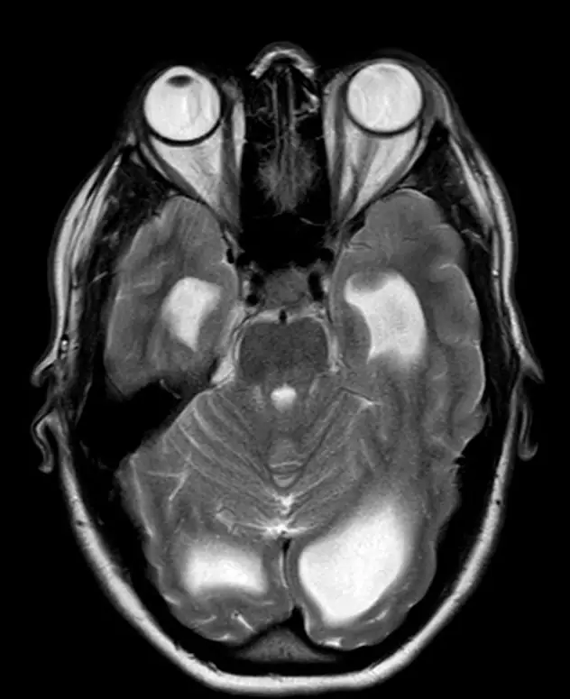
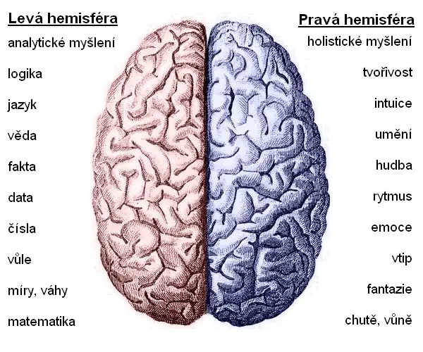
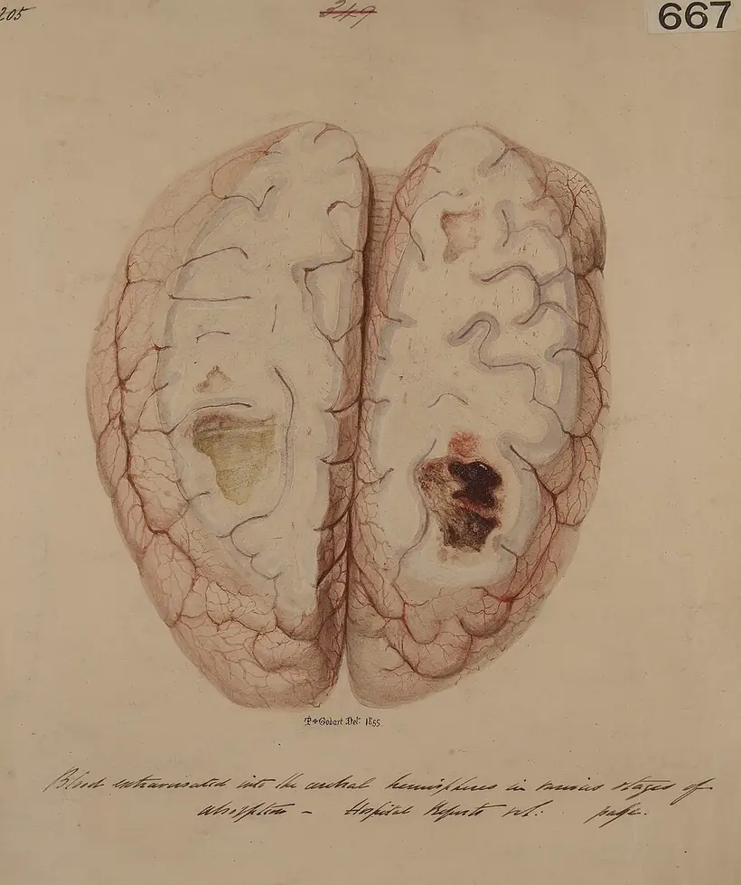

The phenomenon
Alien hand syndrome is a rare neurological condition in which one hand performs purposeful actions that the person does not intend and cannot suppress. The hand may grasp objects, undo clothing, or conflict with the other hand. Patients typically describe it as acting of its own accord, and some deny ownership of the limb.
Maps, diagrams and images






It appears most often after surgery severing the corpus callosum — the bundle connecting the hemispheres — and after strokes affecting the medial frontal cortex or the supplementary motor area. Variants differ: some involve involuntary grasping, others a conflict between the two hands.
What it shows
The condition is a demonstration that voluntary action is not a single command but a set of competing systems that are normally coordinated. When the coordination is damaged, one system's output reaches the limb without the other's consent.
It also complicates the idea of a unified self: the patient experiences a limb that is theirs, moved by an agency that is not. That is philosophically striking and neurologically mundane — a lesion, a circuit, a behaviour.
Documented: the syndrome is real, rare, and associated with specific lesions.
Documented: it occurs after callosotomy and after strokes in particular regions.
Documented: the movements are purposeful, not random — the hand does things.
Not established: any supernatural or 'possession' explanation, which is where the popular literature goes.
Why it matters: it shows that the sense of agency is a computation, and that it can be selectively broken.
Why it is in the archive
Because it is a documented case where the language of the paranormal — an alien presence controlling a body — is the honest description of a neurological lesion. The archive files it as documented and lets the vocabulary be strange.
Open resources on this topic
- BookAlien Hand Syndrome and other Too-Weird-Not-To-Be-True Stories — Alan Bellows · 2009 (Internet Archive, free to read)
- BookAlien hand syndrome and other too-weird-not-to-be-true stories — Bellows, Alan · 2009 (Internet Archive, free to read)
- BookAlien Hand Syndrome Webcomic — Drake, aka Knullakuk (Internet Archive, free to read)
- PapersOpen-access articles: DOAJ · PubMed Central · Internet Archive Scholar
- BooksPublic-domain and borrowable copies: Open Library · Project Gutenberg · Google Books
Cite this page
Momin, S. (2026). Alien Hand Syndrome. The Larger World Archive. https://drsamonline.github.io/LARGE_GLOBE/alien-hand-syndrome.htmlMomin, Sohil. “Alien Hand Syndrome.” The Larger World Archive, 2026, https://drsamonline.github.io/LARGE_GLOBE/alien-hand-syndrome.html.Momin, Sohil. “Alien Hand Syndrome.” The Larger World Archive, 2026. https://drsamonline.github.io/LARGE_GLOBE/alien-hand-syndrome.html.@misc{alien2026alien,
author = {Momin, Sohil},
title = {Alien Hand Syndrome},
year = {2026},
howpublished = {The Larger World Archive},
url = {https://drsamonline.github.io/LARGE_GLOBE/alien-hand-syndrome.html},
note = {Last reviewed 20 November 2026}
}Last reviewed 20 November 2026 · Corrections policy · this page is not peer reviewed
Sources for this page
- Wikipedia, “Alien hand syndrome” — the condition, causes and variantsen.wikipedia.org
- Wikipedia, “Corpus callosum” — the structure whose damage produces iten.wikipedia.org
- Wikipedia, “Split-brain” — the experiments that made it legibleen.wikipedia.org
- Wikipedia, “Sense of agency” — the computation that breaksen.wikipedia.org